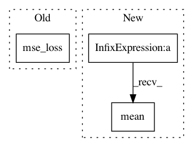

8d52bd0b09152b02e0a5504d33593d0c290b88c7,ch14/06_train_d4pg.py,,,#,47
Before Change
q_last_v = tgt_crt_net.target_model(last_states_v, last_act_v)
q_last_v[dones_mask] = 0.0
q_ref_v = rewards_v.unsqueeze(dim=-1) + q_last_v * (GAMMA ** REWARD_STEPS)
critic_loss_v = F.mse_loss(q_v, q_ref_v.detach())
critic_loss_v.backward()
crt_opt.step()
tb_tracker.track("loss_critic", critic_loss_v, frame_idx)
tb_tracker.track("critic_ref", q_ref_v.mean(), frame_idx)
After Change
last_distr_v = F.softmax(tgt_crt_net.target_model(last_states_v, last_act_v))
proj_distr_v = distr_projection(last_distr_v, rewards_v, dones_mask,
gamma=GAMMA**REWARD_STEPS, cuda=args.cuda)
prob_dist_v = -F.log_softmax(crt_distr_v) * proj_distr_v
critic_loss_v = prob_dist_v.sum(dim=1).mean()
critic_loss_v.backward()
crt_opt.step()
tb_tracker.track("loss_critic", critic_loss_v, frame_idx)
In pattern: SUPERPATTERN
Frequency: 3
Non-data size: 3
Instances
Project Name: PacktPublishing/Deep-Reinforcement-Learning-Hands-On
Commit Name: 8d52bd0b09152b02e0a5504d33593d0c290b88c7
Time: 2018-02-05
Author: max.lapan@gmail.com
File Name: ch14/06_train_d4pg.py
Class Name:
Method Name:
Project Name: ikostrikov/pytorch-a2c-ppo-acktr
Commit Name: 0cfdc391714cc2eea9502aa7e0019d24bae19192
Time: 2018-11-25
Author: ikostrikov@gmail.com
File Name: algo/ppo.py
Class Name: PPO
Method Name: update
Project Name: ikostrikov/pytorch-a2c-ppo-acktr
Commit Name: 79ec8f5009d71a891176f23af20fc077f058713a
Time: 2018-09-25
Author: ikostrikov@gmail.com
File Name: algo/ppo.py
Class Name: PPO
Method Name: update